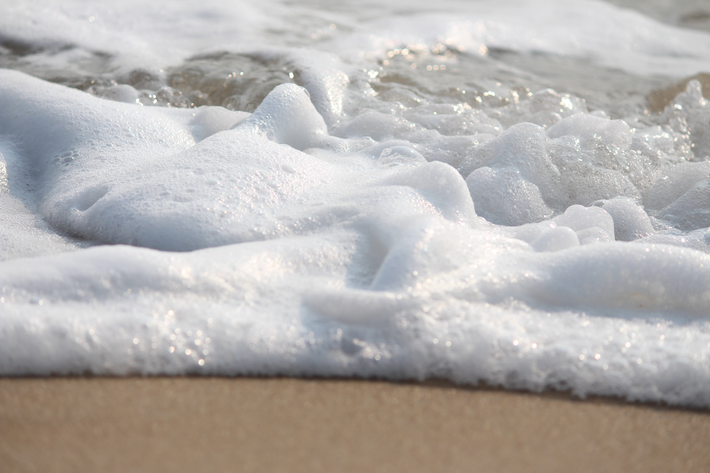
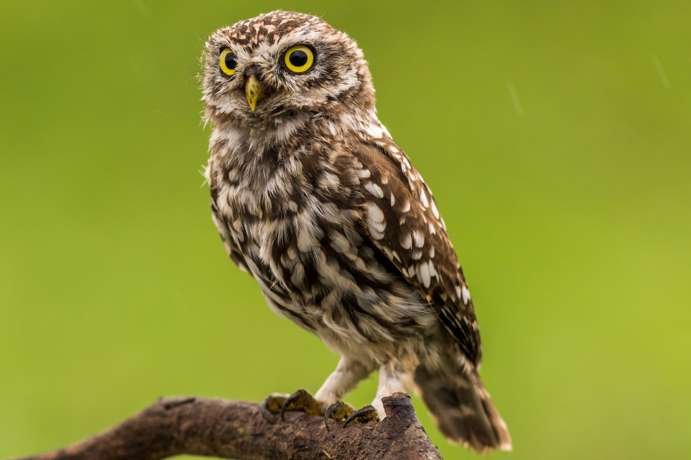

Ponmudi
A hill resort close to the sea, Ponmudi is idyllic with narrow, winding pathways and cool, green, wooded environs.
Located at about 915 ft above the sea level, Ponmudi is home to many beautiful mountain flowers, exotic butterflies,
springs and rivulets. The region is also occupied by spice and tea plantations and is dotted with waterfalls and view
points. This hill destination is ideal for long walks and treks

attraction
The bustling city is home to a vast population and the residents, as well as the tourists who come here, sometimes look
for places around the city to enjoy as well. There are a number of beaches which lie within easy distance of the city.
Kerala is famous for its backwaters, but going out to the beach is another pleasure altogether. They provide a splendid
weekend getaway for families and a somewhere to relax away from the hustle of the city.

Wildlife
The Peppara Wildlife Sanctuary is a wildlife sanctuary in Thiruvananthapuram district of Kerala, India. It consists of
the catchment area of the Karamana River, which originates from Chemmunjimottai, the tallest hill within the sanctuary.
The sanctuary is named after the Peppara Dam, commissioned in 1983 to augment the drinking water supply to
Thiruvananthapuram city and suburban areas. Considering the ecological significance of the area, it was declared a
sanctuary in 1983.